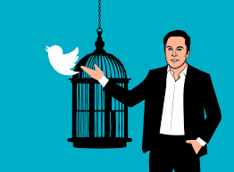

Querido lector, a continuación hablaré sobre la proximidad del fin del planeta tierra. Antes de proceder, te invito a responder la encuesta que encuentras abajo para contribuir a los datos aqui presentados en este texto.
Encuesta
En este documento se hablará sobre el texto " At doom’s doorstep: It is 100 seconds to midnight. 2022 Doomsday Clock Statement"[1] publicado por The Bulletin of the Atomic Scientists para la realización de un comentario de ingeniería. Relájese y disfrute.
Resumen
Para este comentario de Ingeniería, se tuvo en cuenta el reporte hecho por el periodico "the bulletin of the atomic scientists" el cual tiene como objetivo documentar y reportar que tan cerca o lejos estamos del dia el que el planeta colapsara. Este reporte se realiza todos los años y en este se destacan, además de un calculo aproximado del tiempo restante que tenemos para enmendar nuestros errores, las mayores problemáticas y/o noticias que nos afectan al mundo entero negativamente. Para el reporte de este año se mencionan diferentes problemáticas tales como el desarrollo sin limite de armas nucleares en los paises, poca acción para reversar el cambio climático, uso de armas biológicas que afectan a la poblacion y, por ultimo menos importante, el papel de la tecnología en el auge de la desinformación global que es en donde me enfocare principalmente. Para finalizar, el reporte menciona que estamos a 100 segundos para que llegue la catastrofe global si no cambiamos nuestras acciones inmediatamente, destando el caos en todo el mundo. De la misma manera, propone que se refuercen valores como la comunicación entre paises para evitar el uso o desarrollo de armas nucleares, un mayor enfoque por los lideres por reducir las emisiones de carbono, mejores relaciones de los paises con la OMS para observar interacciones entre humanos y animales al igual que todos los lideres de tecnología, academicos, lideres identifiquen e intenten implementar formas éticas de combatir la desinformación que se ve hoy en día.
Resultados de la encuesta:
1.¿Cree usted que el mal uso junto con el uso excesivo de la tecnología puede contribuir a que se acerque el fin del mundo para el planeta tierra?
2.¿Considera usted que las noticias falsas afectan su vida coitidiana?
3.¿Qué tan próximo siente que será el fin del mundo?
Opinión
Teniendo en cuenta lo anteriormente mencionado, se plantea la pregunta ¿En qué puede aportar el desarrollo de su ingeniería para evitar la aceleración del reloj?. Si bien en el informe se menciona mas de una problemática, la que más se relaciona a la Ingeniería informática es el tema de noticias falsas y propagación de la desinformación mediante las redes sociales. Para comenzar, un ingeniero informático se enfoca, principalmente, en el uso y administración de la información más especificamente la que se encuentra por internet y es nuestro deber ser capaces de encontrar maneras de solucionar y/o detener el avance de situaciones que promuevan la desinformación y el caos. Seguramente en más de una ocasión todos hemos sido víctimas de alguna noticia falsa, incluso hasta los propios medios de comunicación o dirigentes de naciones lo han sido. Esto puede evidenciarse en especial en la red social de Twitter, donde más de un político ha sido objeto de burlas por haber caido en la desinformación. Tal es el caso de la Senadora Maria Fernanda Cabal, del Centro Democrático, quien en Diciembre de 2021 hace referencia a una noticia falsa, y aún peor, pone en prueba su credibilidad en cuanto a la información que comparte y quien seguramente no ha sido la única en realizar este tipo de actos.[2]. Afinal de cuentas, este tipo de actos también causa que sus seguidores entiendan la desinformación que comparte el dirigente como verídica.

Si bien estos actos son realidades del día a día en cualquier red social, es importante resaltar que Twitter es en donde más se evidencia este tipo de comportamientos lo que ha causado que en lso ultimos meses el genio, billonario y ahora dueño de Twitter pretenda hacer reformas para detener esta situación. En los últimos dias Elon Musk se ha pronunciado acerca de las noticias falsas y la libertad de expresión y, dado que ahora es el nuevo CEO de twitter, pretende hacer estos cambios contundentes. Él pretende dar a sus usuarios libertad de expresión y lograr que Twitter sea un lugar de expresión libre además de divulgación de információn verídica[3]. Tiene como objetivo que cualquier tweet con información sera eliminado y la cuenta baneada. En caso de ser paródia, debe ser clara la intención, de lo contrario se contara como noticia falsa. A pesar de que en un principio parece ser una medida drástica en la lucha contra la desinformación, es un comienzo por el cual se empieza a ver el interes del nuevo CEO de twitter por cumplir con la solución expuesta en el informe anteriormente mencionado que refleja una de las alternativas que tiene la ingeniería informática para desacelerar el avance del reloj.

Referencias:
-[1]Current time - 2022. Bulletin of the Atomic Scientists. (2022, March 7). Retrieved November 9, 2022, from https://thebulletin.org/doomsday-clock/current-time/
-[2]Anónimo. (2021, December 18). María Fernanda Cabal Causó Risas y controversia en redes, Luego de Réplicar Una Noticia Falsa. infobae. Retrieved November 9, 2022, from https://www.infobae.com/america/colombia/2021/12/18/maria-fernanda-cabal-causo-risas-y-controversia-en-redes-luego-de-replicar-una-noticia-falsa/
-[3]González, C. (2022, October 31). Estos son los 5 grandes cambios que elon musk quiere hacer en twitter. ComputerHoy. Retrieved November 9, 2022, from https://computerhoy.com/noticias/tecnologia/estos-son-5-grandes-cambios-elon-musk-quiere-hacer-twitter-1148813